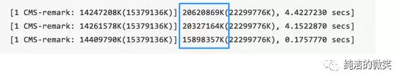

jvm系列(六):Java服务GC参数调优案例
本文介绍了一次生产环境的JVM GC相关参数的调优过程，通过参数的调整避免了GC卡顿对JAVA服务成功率的影响。
这段时间在整理jvm系列的文章，无意中发现本文，作者思路清晰通过步步分析最终解决问题。我个人特别喜欢这种实战类的内容，经原作者的授权同意，将文章分享于此。备注部分为本人添加，主要起到说明的作用。
原文出处：https://segmentfault.com/a/1190000005174819
背景以及遇到的问题
我们的Java HTTP服务属于OLTP类型，对成功率和响应时间的要求比较高，在生产环境中出现偶现的成功率突然下降然后又自动恢复的情况，如图所示：
JVM和GC相关的参数如下：
-Xmx22528m-Xms22528m-XX:NewRatio=2-XX:+UseConcMarkSweepGC-XX:+UseParNewGC-XX:+CMSParallelRemarkEnabled
总结来说，由于服务中大量使用了Cache，所以堆大小开到了22G。GC算法使用CMS（UseConcMarkSweepGC），开启了降低标记停顿（CMSParallelRemarkEnabled），设置年轻代为并行收集（UseParNewGC），年轻代和老年代的比例为1:2 （NewRatio＝2）.
JVM GC日志相关的参数如下：
-Xloggc:/data/gc.log-XX:GCLogFileSize=10M-XX:NumberOfGCLogFiles=10-XX:+UseGCLogFileRotation-XX:+PrintGCDateStamps-XX:+PrintGCTimeStamps-XX:+PrintGCDetails-XX:+DisableExplicitGC-verbose:gc
问题解决过程
排除应用程序的内存使用问题
首先使用jmap查看内存使用情况：
- jmap -histo:live PID
这个命令把程序中当前的对象按照个数和占用的空间排序以后打印出来。这里没有发现使用异常的对象。
排除Cache内容过多的问题
如果Cache内容过多也会导致JVM老年代容易被用满导致频繁GC，因此调出GC日志进行查看，发现每次GC以后内存使用一般是从20G降低到5G左右，因此常驻内存的Cache不是导致GC长时间卡顿的根本原因。对于GC LOG的查看有多种方式，使用VisualVM比较直观，需要使用VisualGC：
Java服务GC参数调优案例_files/cache.webp)
从图中我们可以看到伊甸园和老年代的空间分配，由于整体内存是20G，设置 -XX:NewRatio=2 因此老年代是14G，伊甸园＋S0+S1=7G
调整GC时间点（成功率抖动问题加重）
如果GC需要处理的内存量比较大，执行的时间也就比较长，STW （Stop the World）时间也就更长。按照这个思路调整CMS启动的时间点，希望提早GC，也就是让GC变得更加频繁但是期望每次执行的时间较少。添加了下面这两个参数：
-XX:+UseCMSInitiatingOccupancyOnly-XX:CMSInitiatingOccupancyFraction=50
意思是说在Old区使用了50%的时候触发GC。实验后发现GC的频率有所增加，但是每次GC造成的陈功率降低现象并没有减弱，因此弃用这两个参数。
调整对象在年轻代内存中驻留的时间（效果不明显）
如果能够降低老年代GC的频率也可以达到降低GC影响的目的，因此尝试让对象在年轻代内存中进行更长时间的驻留，提升这些对象在年轻代GC时候被销毁的概率。使用参数
-XX:MaxTenuringThreshold=31调整以后收效不明显。备注：1、MaxTenuringThreshold 在1.5.005之前最大值可以设置为31 ，1.5.006以后最大值可以设置为15，超过15会被认为无限大。2、提升年轻代GC被销毁的概率，只是调整这个参数效果不大，第二次age的值会重新计算。
CMS-Remark之前强制进行年轻代的GC
首先补充一下CMS的相关知识，在CMS整个过程中有两个步骤是STW的，如图红色部分：
CMS并非没有暂停，而是用两次短暂停来替代串行标记整理算法的长暂停，它的收集周期是这样：
- 1、初始标记(CMS-initial-mark),从root对象开始标记存活的对象
- 2、并发标记(CMS-concurrent-mark)
- 3、重新标记(CMS-remark),暂停所有应用程序线程，重新标记并发标记阶段遗漏的对象（在并发标记阶段结束后对象状态的更新导致）
- 4、并发清除(CMS-concurrent-sweep)
- 5、并发重设状态等待下次CMS的触发(CMS-concurrent-reset)。
通过GC日志和成功率下降的时间点进行比对发现并不是每一次老年代GC都会导致成功率的下降，但是从中发现了一个规律：
前两次GC CMS-Remark过程在4s左右造成了成功率的下降，但是第三次GC并没有对成功率造成明显的影响,CMS-Remark只有0.18s。Java HTTP 服务是通过Nginx进行反向代理的，nginx设置的超时时间是3s，所以如果GC卡顿在3s以内就不会对成功率造成太大的影响。
从GC日志中又发现一个信息：

在文档和相关资料中没有找到蓝色部分的含义，猜测是remark处理的内存量，处理的越多就越慢。添加下面两个参数强制在remark阶段和FULL GC阶段之前先在进行一次年轻代的GC，这样需要进行处理的内存量就
- XX:+ScavengeBeforeFullGC
-XX:+CMSScavengeBeforeRemark
备注：1、蓝色部分的含义：remark标记需要清理对象的容量。2、FULL GC阶段之前先在进行一次年轻代的GC的意义是：Yong区对象引用了Old区的对象，如果在Old区进行清理之前不进行Yong区清理，就会导致Old区被Yong区引用的对象无法释放。
调优以后效果很明显，下面是两台配置完全相同的服务器在同一时间段的成功率和响应时间监控图，第一个没有添加强制年轻代GC的参数。
结论
1、在CMS-remark阶段需要对堆中所有的内存对象进行处理，如果在这个阶段之前强制执行一次年轻代的GC会大量减少remark需要处理的内存数量，进而降低JVM卡顿对成功率的影响。
2、对于Java HTTP服务，JVM的卡顿时间应该小于HTTP客户端的调用超时时间，否则JVM卡顿会对成功率造成影响。